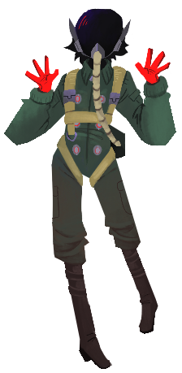

Faust

"The one and only. - Faust".
Induction Date: December 25th, 1944
Original Status: Paradoxical, not native to the initial zone of mutation that effects Froreloche; no mutations documented.

"The one and only. - Faust".
Induction Date: December 25th, 1944
Original Status: Paradoxical, not native to the initial zone of mutation that effects Froreloche; no mutations documented.